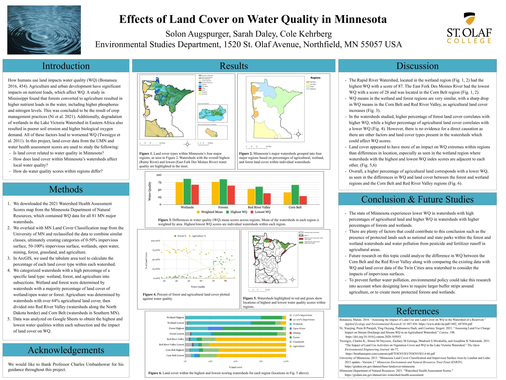

The way in which humans use land impacts the water quality within watersheds (Bonansea, 2016). Agriculture tends to leave high nutrient loads in the water as a result of the use of fertilizer, crop management, and the manure of farm animals. These farming practices lead to significant phosphorus and nitrogen pollution, which worsens water quality (Ni et al., 2021). In a study of Minnesota’s watersheds, we pulled data layers from the University of Minnesota and the Minnesota Department of Natural Resources to analyze the correlation between land coverage and water quality within regions of similar watersheds. The watersheds in regions containing mostly wetlands and forests had the highest average water quality scores (around 75/100), while the two regions made of agricultural land scored the lowest (around 40-50/100). We calculated overall water quality scores by using a mean of several important quality indicators.
Water is crucial to life on Earth and the degradation of water adversely affects the health and wellbeing of all the living organisms that depend on it. From our study of Minnesota, it is clear that modern-day agricultural practices negatively impact water quality. In contrast, wetlands and forests, which tend to be less controlled by humans, scored higher in water quality indices. However, we notably excluded the watershed of Minnesota around the Twin Cities, which contains the highest percentage of impervious surfaces in the state (University of Minnesota, 2013). Because Minnesota contains only one watershed with a significant percentage of impervious surfaces, we excluded it in our study of Minnesota due to a lack of data. This exclusion presents the opportunity to explore the impact of increased runoff and the impact of roads, sidewalks, and buildings on localized water quality.
By definition, impervious surfaces prevent rainwater from permeating through, which creates runoff from the lack of drainage. Roadways, perhaps some of the most obvious impervious surfaces, cause nonpoint source pollution when cars regularly drive over them. Vehicles can leave behind heavy metals, hydrocarbons, and fuel additives, all of which mix with rainwater that is unable to drain through the roads (Kayhanian et al., 2007). Water quality is also measurably worse after rains that follow a dry period because pollutants build up on the roads, and then drain all at once. Localized water quality deteriorates as this rainwater runoff blends with streams, lakes, and rivers. Roads also negatively affect water quality at higher rates when there is more traffic, which is generally seen in urban areas.
However, roads and sidewalks only make up a small portion of impervious surfaces, particularly in urban areas. Roofs on buildings are a major source of collected rainwater, and tend to pollute comparatively more on less significant rainfalls (Egodawatta et al., 2012). Similar to the buildup of pollutants on roads following a long dry spell, organic carbon loads and solids build up on roofs. Rain drains most of them away on the ‘first flush,’ explaining why roofs pollute proportionally more on smaller rainfalls. Notably, phosphorus and nitrogen, which tend to be major sources of nonpoint pollution, were studied to have relatively low pollution levels from roofs.
Interestingly, runoff from impervious surfaces in urban areas has been found to affect water quality more significantly than in suburban or rural areas (Kim et al., 2016). In rural and suburban areas, the sides of roads and buildings tend to have more soil, which water can seep into. In urban areas, the lack of permeability into soil makes water drain into sewage systems and/or directly into waterways. A study from Korea found that controlling impervious surfaces to below 10% of total land cover is critical to preventing water quality degradation (Kim et al., 2016). Percentages of impervious surface area (PISA) above the 10% threshold resulted in negative effects in levels of biological oxygen demand, carbon content, and phosphorous content, which are all known water pollutants. In Minnesota, only five out of the eighty-one watersheds have PISAs above 10%, and four of those are between 10-14%. This means that any future study of the impact of roads, sidewalks, and buildings on Minnesota’s water quality would likely need to break up the eighty-one larger watersheds into smaller, local watersheds to try and isolate the areas with even larger PISAs.
Additionally, a separate study out of Shenzhen, China found that the PISA threshold is closer to 37%, after controlling point-source pollution, which traces back to a single point that governments can theoretically identify and crack down on (Liu et al., 2013). In other words, the isolated accumulated nonpoint-source pollution generated in the runoff from impervious surfaces only begins to affect water quality at a PISA of 37%, once specific sources of pollution are controlled. Similar to the study in Korea, this study out of China used biological oxygen demand and phosphorus content, in addition to nitrogen levels, in its assessment of water quality. As the two studies used similar water quality measurements, and the study from China acknowledged the 10-20% PISA threshold, both can be used in congruence with one another as long as local point-source pollution is properly understood.
These sources make no mention of semi-permeable surfaces, which could reduce the impact of roads and sidewalks on water quality. If some water is able to leak through a mostly impermeable surface, the volume of runoff decreases, and the soil below the roads and sidewalks is able to absorb some of the rainwater. Additionally, green roofs have the potential to prevent the runoff from buildings through the creation of potential absorption at the point of rainfall. Green roofs also slightly prevent the heat island effect, which causes the mean temperature in urban areas to rise due to the high quantity of dark, reflective surfaces. Since temperature is also considered a metric of water quality, the reduced heat increase from a prevention of the heat island effect also can subsequently improve water quality.
A summary of this scholarly research indicates that impacts on localized water quality from impervious surfaces require a region of significant urbanization in order to be measurable. While the threshold of PISA depends on the control of point-source pollution, some baseline level of impervious surface is needed before they can affect local water quality. The forms of pollution depend on where the runoff originates from. Higher levels of biological oxygen demand, phosphorus, and nitrogen tended to originate from roads and sidewalks, while increased organic carbon loads and solids came from the roofs of buildings. Future studies may use GIS to look at how areas with PISA rates above 37% affect the water quality of larger drainage basins. Rather than examining the localized water quality within a watershed, it may be fruitful to study the effects of multiple urban areas on a larger drainage basin to see whether individual urban watersheds can collectively contaminate a more sweeping basin.
References
Bonansea, M. (2016). Assessing the Impact of Land Use and Land Cover on Water Quality in the Watershed of a Reservoir. Applied Ecology and Environmental Research14. 447-456. https://www.aloki.hu/pdf/1402_447456.pdf
Egodawatta, P., Miguntanna, N. S., & Goonetilleke, A. (2012). Impact of roof surface runoff on urban water quality. Water Science and Technology, 66(7), 1527-1533. https://doi.org/10.2166/wst.2012.348
Kayhanian, M., Suverkropp, C., Ruby, A., & Tsay, K. (2007). Characterization and prediction of highway runoff constituent event mean concentration. Journal of Environmental Management, 85(2), 279–295. https://doi.org/10.1016/j.jenvman.2006.09.024
Kim, H., Jeong, H., Jeon, J., & Bae, S. (2016). The Impact of Impervious Surface on Water Quality and Its Threshold in Korea. Water., 8(4). https://doi.org/10.3390/w8040111
Liu, Z., Wang, Y., Li, Z., & Peng, J. (2013). Impervious surface impact on water quality in the process of rapid urbanization in Shenzhen, China. Environmental Earth Sciences., 68(8), 2365–2373. https://doi.org/10.1007/s12665-012-1918-2
Minnesota Department of Natural Resources. (2021). Watershed Health Assessment Scores. https://gisdata.mn.gov/dataset/env-watershed-health-assessment
Ni, X., Parajuli, P., Ouyang, Y., Dash, P., & Siegert, C. (2021). Assessing Land Use Change Impact on Stream Discharge and Stream Water Quality in an Agricultural Watershed. Catena. 198. https://doi.org/10.1016/j.catena.2020.105055.
University of Minnesota. (2013). Minnesota Land Cover Classification and Impervious Surface Area by Landsat and Lidar: 2013 update - Version 2. Minnesota Environment and Natural Resources Trust Fund (ENRTF). https://gisdata.mn.gov/dataset/base-landcover-minnesota